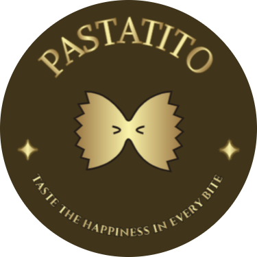

Pastatito

{ pasta house } Where every flavor tells a story
The most luxurious pasta restaurant in Egypt
A taste you’ll remember
----------------------------------------
location
----------------------------------------
menu

Alfredo pasta
A rich and creamy classic made with tender fettuccine pasta tossed in a velvety Parmesan cream sauce, finished with a touch of butter and fresh cracked black pepper. Perfectly indulgent and full of comforting flavor

Arrabbiata pasta
A bold and spicy Roman classic featuring penne pasta tossed in a zesty tomato sauce infused with garlic, chili flakes, and extra virgin olive oil. Finished with fresh parsley for a fiery, flavorful kick

Mac and Cheese pasta
A timeless comfort dish made with tender elbow macaroni smothered in a rich, creamy blend of cheddar and mozzarella cheeses. Baked to golden perfection for a crispy top and gooey center. Perfectly cheesy, warm, and satisfying

Mushroom Pasta
A savory and aromatic dish featuring al dente pasta tossed in a luscious cream sauce with sautéed mushrooms, garlic, and herbs. Finished with a touch of Parmesan and a sprinkle of fresh parsley for a rich, earthy flavor in every bite

Bolognese pasta
A hearty Italian classic with spaghetti pasta topped with a slow-simmered meat sauce made from ground beef, tomatoes, onions, garlic, and herbs. Rich, comforting, and full of deep, savory flavor—an all-time favorite

fettuccine pasta
Wide, ribbon-like pasta cooked to a perfect al dente, ideal for capturing rich, creamy, or hearty sauces. Served with your choice of classic Alfredo, savory Bolognese, or a light olive oil and herb blend. A versatile and satisfying dish for any pasta lover

Pesto Pasta
A vibrant and flavorful dish featuring pasta tossed in a fresh basil pesto sauce made with garlic, pine nuts, Parmesan cheese, and extra virgin olive oil. Fragrant, zesty, and beautifully green—simple yet bursting with bold, herbal flavor

seafood pasta
A luxurious medley of tender shrimp, calamari, and mussels sautéed with garlic and herbs, tossed with pasta in a light tomato or white wine sauce. Fresh, aromatic, and full of ocean flavor—perfect for seafood lovers

Spicy Penne Pasta
Penne pasta tossed in a bold and fiery tomato sauce infused with garlic, chili flakes, and a splash of olive oil. Finished with fresh basil and a sprinkle of Parmesan for a perfect balance of heat and flavor. A must-try for spice lovers

Vegetable Pasta
A colorful mix of seasonal vegetables sautéed to perfection and tossed with your choice of pasta in a light garlic and olive oil sauce or rich tomato basil sauce. Healthy, vibrant, and bursting with garden-fresh flavors
----------------------------------------
visit our pages for more
GoogleTikTok